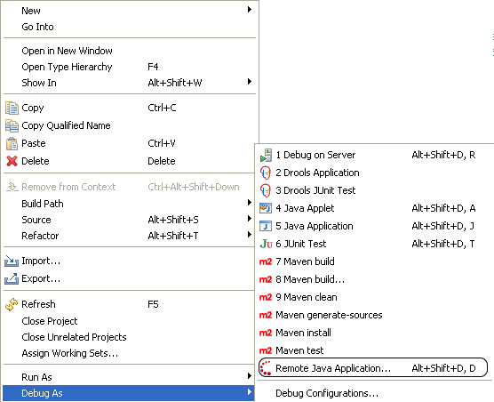
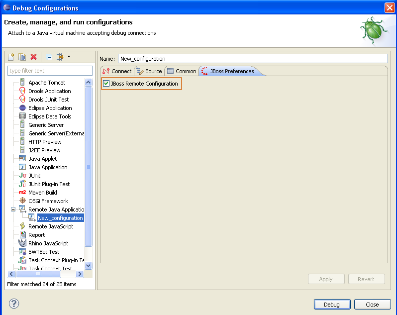

Debugging Remote Java Application
Now JBoss Tools supports discovering and debugging remote Java applications.
You can right-click one or more Java projects in the workspace and call an action to discover Remote Java applications started in the debug mode.
If there are remote Java applications on your localhost, a dialog as shown below will appear:

The application with PID 4964 is started with the 'suspend=y' option. In this case, JDK can determine only the application's PID and port.
The JBoss Remote Java Application feature uses the standard Eclipse Remote Java Application launch configurations having the JBoss Remote configuration preference checked.
The JBoss Remote Java Application supports the following features:
- all selected projects will be included in the source attachment
- if there is the m2e feature, Maven dependencies for all the selected projects will be resolved and included in the source attachment (m2e supports this functionality only for Java application, JUnit and TestNG launch configurations)
- The user can create Remote Java Application launch configurations containing user specific source attachments
The JBoss Remote Java Application feature for now only supports discovering remote applications on localhost.
This feature requires JDK on Windows and Linux. Java for Mac OS X includes all necessary requirements.